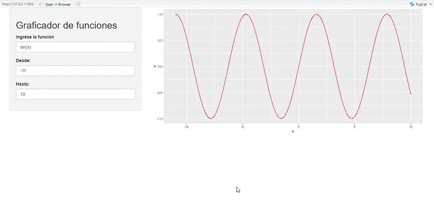

En este post, veremos como crear una aplicación web en shiny que genere gráficos de funciones. Si no conoces que es shiny, mira la presentación realizada por Manuel Oviedo aquí
Los paquetes necesarios son:
library(shiny)
library(ggplot2)En esta parte de la aplicación se tiene tres widget, el primero un textInput() donde se ingresa la función a evaluar y dos numericInput que definen el recorido de la variable x.
ui <- shinyUI(
fluidPage( sidebarPanel(
# Titulo de la app
titlePanel("Graficador de funciones"),
# ingreso de la funcion
textInput("funcion", "Ingrese la función", "sin(x)"),
#ingreso de
numericInput("from", "Desde:", 0, min = -100, max = 100) ,
numericInput("to", "Hasta:", 10, min = -100, max = 100) ),
mainPanel(
plotOutput("distPlot")
)
)
)En esta parte de la aplicación se evalua la función ingresada en el textInput, para poder realizar esta operación se utiliza la función parse(), la cual permite transformar el string ingresado en una expresión.
server <- function(input, output,session) {
datos<-reactive( {
x<-seq(input$from,input$to,by = 0.01)
y<- eval(parse(text = paste(input$funcion)))
datos<-data.frame(x,y)
})
output$distPlot <- renderPlot({
ggplot(datos(),aes(x,y))+
geom_line(colour='red')
})
}El resultado final es:
